密蔵院/愛知県刈谷市
刈谷市にある密蔵院。
住宅地の中にある大師信仰の色合いの濃いお寺だ。
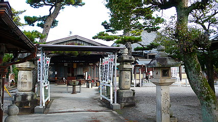
境内は誰でもお越し下さい的な印象。
このふらっと立ち寄れる感がこの寺の最大の特徴といえるかも知れない。
不動明王と矜羯羅、制多迦童子コンビ。
矜羯羅童子の微妙なオバちゃんパーマ具合に泣けてくる。
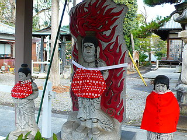 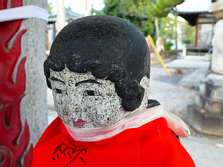
どういうわけか不動サマと眷属にもヨダレ掛けが。
このような「何でもかんでも赤ちゃん化現象」は東北地方に多く見られるが、ここ愛知県下でも何体か目撃した事がある。
凄く怖い顔をしたお坊さんの銅像とかにまでヨダレ掛けがしてあったり。そんなやり過ぎ感が私は大好きです。
本堂の隣にある大師堂にはお堂の前に屋根が架かっており、参拝者の多さを物語っている。
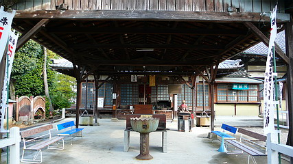
ベンチが設置されていて、一日中日向ぼっこをしていたい、そんな気分にさせる心地よい空間だ。
木像のおびんずる様も屋外だが屋根が架かっているから安心です。
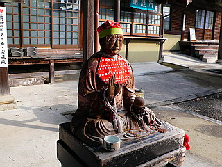 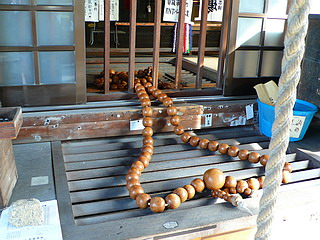
お堂の正面には巨大な数珠が横たわっていた。
さて、大師堂の脇のスペースには屋外信仰ガーデンが控えている。
このようにごちゃごちゃしたトコロは見ているだけでドキドキしてくる。
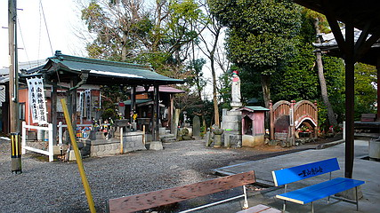
まず目についたのは極端な太鼓橋。
これは渡るためのモノではない。
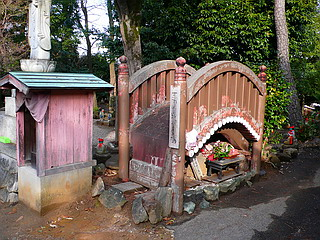 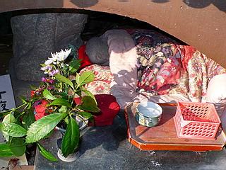
橋の下を覗いてみてビックリ。
石仏がお布団掛けて寝てるじゃないすか！
これは弘法大師が四国を行脚中に泊まったという愛媛県の十夜ヶ橋を再現したもの。
わざわざ橋まで作って野宿を再現するって…並々ならぬ弘法愛を感じましたよ。
と、小さなお堂の中からただならぬ視線を感じたので見てみると…
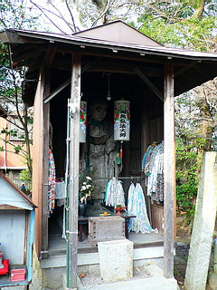
むむ。
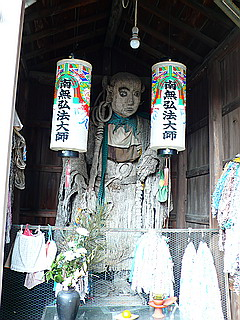
うっ！
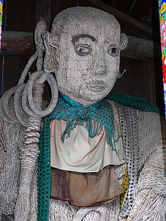
こっ、怖い〜！
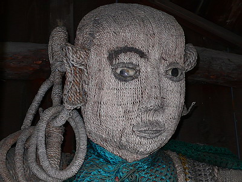
象嵌がずれちゃって怖い怖い。
しかも縄で全身が出来ている。
しばられ地蔵ならともかく、このような方法で作られた仏像（大師サマだけど）は初めて見たぞ。
耳の折り返しや目や唇のエッジの処理に並々ならぬテクニックが見え隠れ。
左眉が無いのは恐らく千葉の清澄山での片眉剃り落とし伝説に因むものだと思われる。
…あっ、あれはマス大山師でしたね。
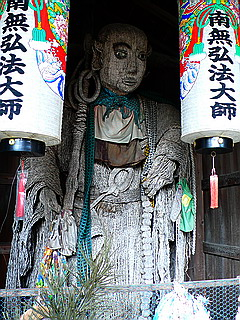
全身に目を移せば衣はもちろんのこと錫杖や手までも縄で出来ている。
藁で作る人形とはまた違った精巧な出来栄えが怖さの原因かと思われる。
この縄大師、作り方としては土台となる像に縄を巻きつけた、あるいは貼り付けたモノなのだろう。
と、なると縄の下にベースとなる大師サマがいるはず。
ココからは私の想像だが、元々ここには縄が巻かれていない普通の弘法大師像があったのだろう。
それがある時、何らかの理由で縄を全身にあしらわれてしまったのだ。
考えられる理由その1
縄を巻きつけることによる宗教的作用。
例えばこの大師像が強大な呪詛力を持っていてそれを封ずる、とかそういったムー的な理由。
考えられる理由その2
物理的に大師像が汚れちゃったから、あるいは修復不能のそれはそれは酷いいたずら書きをされちゃって、それを隠すため。
いや、もしかしたら…
考えられる理由その3
手芸好きの近所の方々が集まって縄でデコレートしたのかもしれない。
五円玉で亀を作ったり、タバコの空き箱で傘をつくったり、毛糸を編んで犬のぬいぐるみを作ったり…そんなノリの延長線上で。
とすれば縄大師は巨大な手芸作品、ぬいぐるみの一種なのだろうか？？？？
…ひょっとして、中身はマネキン人形だったりして…
あながちあり得ないハナシでもないところが恐ろしい。
裏手には四国八十八箇所お砂踏み霊場が広がっている。
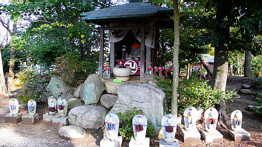
木々の間に無数の石像がキノコのように群生している。
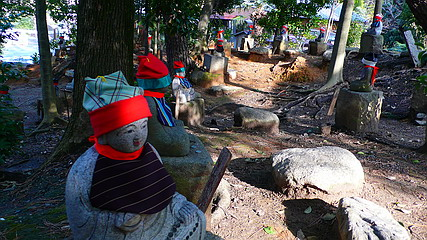
もちろんすべての石仏にヨダレ掛けと帽子は標準装備。
これまた手芸大好きな人がつくったのだろう。コレだけの数を作るのは大変だと思う。
ついでに勢い余って先の不動サマにもヨダレ掛けを作ってしまったのだろう。素晴らしき蛇足魂。
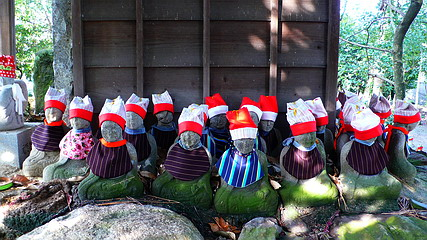
それにしても愛知県は本当に大師信仰が盛んだなあ、と改めて思う。
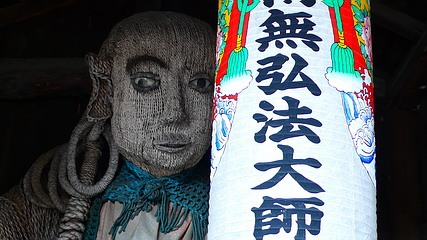
やっぱし怖。
2008.02.
珍寺大道場 HOME